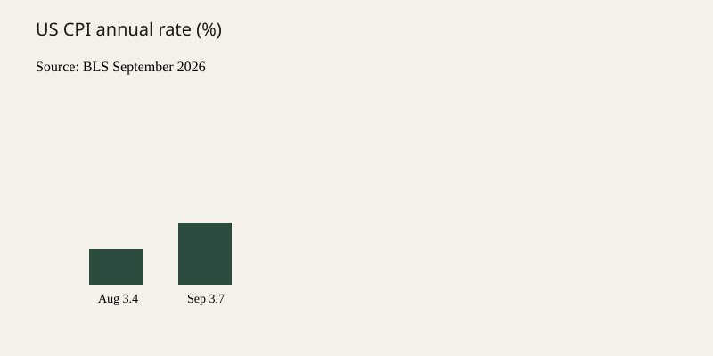

United States · prices · 14 October 2026
The US Consumer Price Index rose 3.7 percent in the year to September.

What is agreed across desks
The Bureau of Labor Statistics released its September 2026 Consumer Price Index on Wednesday, 14 October. The CPI for All Urban Consumers (CPI-U) rose 0.6 percent on a seasonally adjusted basis in September after a 0.4 percent rise in August. Over the twelve months ending in September the index increased 3.7 percent before seasonal adjustment, up from 3.4 percent in the prior twelve-month period.
Gasoline rose 9.1 percent in September and accounted for more than half of the monthly all-items increase. The energy index increased 5.2 percent over the month. The shelter index rose 0.4 percent. The food index was unchanged. The index for all items less food and energy (core CPI) rose 0.3 percent on the month and 2.6 percent over the year. The not-seasonally-adjusted CPI-U stood at 336.940 (1982-84=100).
AP, Reuters, and the Wall Street Journal matched the BLS print on the headline and core figures and on the role of gasoline. No major desk disputed the published index numbers.
What is only a quote
Political commentary that the print “hurts” one party or “helps” another is interpretation, not a BLS statistic. Statements about the Federal Reserve’s next move are forecasts, not the index itself. The BLS release does not assign causality beyond the component weights it publishes.
Mechanism a reader needs
The CPI measures the average change in prices paid by urban consumers for a fixed basket of goods and services. It is not a cost-of-living index that adjusts for substitution in real time, though the chained CPI is an alternative measure that does. Shelter has a large weight; energy is volatile. A 9.1 percent monthly gasoline jump can dominate the all-items print even if core remains near 0.3 percent. The twelve-month energy increase of 20.4 percent reflects both recent monthly moves and base effects from a year earlier.
The data are collected from about 22,000 retail establishments and 6,000 housing units in 75 urban areas. Prices for most items are collected monthly in the largest areas and bimonthly elsewhere. The release is embargoed until 8:30 a.m. Eastern on the scheduled day. Revisions to the most recent months are possible but rare for the headline print once published.
Midterm elections are scheduled for 3 November 2026. Affordability has been a frequent campaign topic. The September print is the last CPI release before Election Day. That timing is a calendar fact; it does not change the arithmetic of the index.

What this story is not
It is not a claim that every household experienced a 3.7 percent increase. It is not a finding that any particular policy caused the gasoline move. It is not a prediction of the October print. The seal above is the official Department of Labor emblem, not an image of a pump or a supermarket shelf.
Source articles and scores
Images: Wikimedia Commons Department of Labor seal via Special:FilePath. Chart is original local SVG from the published BLS numbers. onerror falls back to committed SVG. No news CDN pixels.